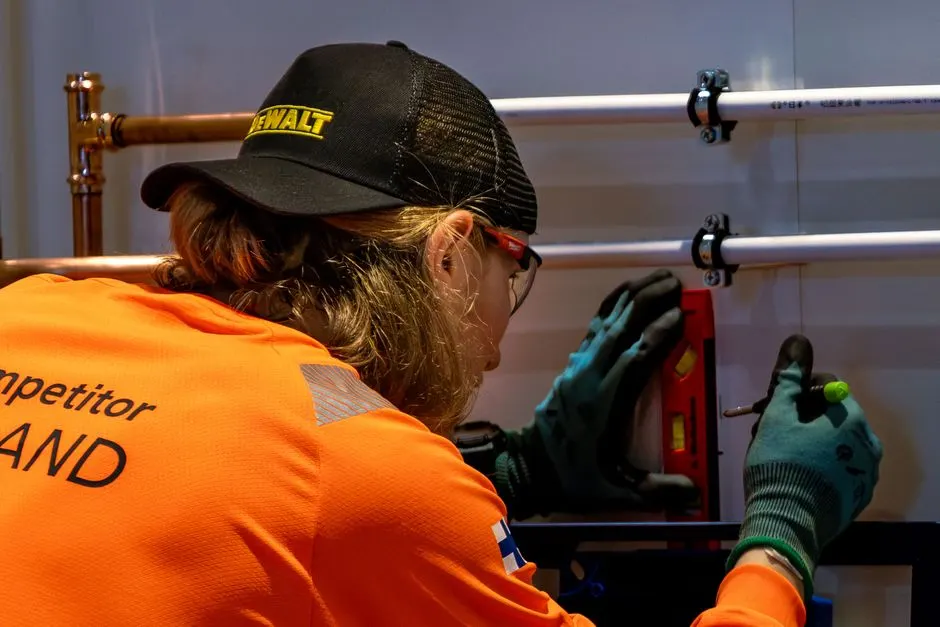

Emergency plumbing in Arlington Heights: what to do first
Water where it shouldn't be? Here's the exact order of steps to take in an Arlington Heights plumbing emergency - shutoff, damage control, and who to call.

Shut off the water supply first, then cut the power to any wet electrical area, and call a 24/7 plumber. Those three moves in that order stop most of the damage in an Arlington Heights plumbing emergency before a truck even pulls up. The rest of this guide walks you through where your shutoff valves actually are, what to do when a pipe bursts, and the mistakes that turn a $200 repair into a $12,000 insurance claim.
What should you do first in a plumbing emergency?
Stop the water, then stop the electricity, then call for help. Emergency Plumbing Arlington Heights IL what to do is really a sequence question - and getting the order wrong is what causes ceilings to collapse and floors to buckle.
Here is the order that matters:
- Kill the water. Main shutoff if you can't isolate the fixture. Every minute of flowing water adds roughly a gallon to the cleanup.
- Kill the power to any room with standing water near outlets, appliances, or a ceiling leak. Flip the breaker; don't reach into a wet panel.
- Contain and document. Towels, buckets, a shop vac. Photograph everything before you move it - your insurer will want it.
- Call a plumber who answers at 2 a.m. and can give you a real arrival window.
Most Arlington Heights homes we service are on a 3/4-inch or 1-inch main, and a fully open main can push 10 to 15 gallons per minute into a room. That is a bathtub every two minutes. Shutting it off is not optional and it is not something to think about - it is the first thing you do.
How to shut off your water in Arlington Heights
Your main shutoff valve in Arlington Heights is almost always in the basement, near the front foundation wall where the service line enters, or in a utility closet on slab homes. Find it before you need it - that is the single most useful 60 seconds a homeowner can spend.
Locating the main valve
Look for a gate or ball valve on the pipe coming through the foundation, usually within a few feet of the water meter. In older Arlington Heights housing stock - plenty of it built between 1920 and 1965 - you'll often find a round gate valve with a red handle. Newer installs use a lever-style ball valve that only needs a quarter turn.
If you live in a condo or townhome, your unit shutoff may be behind an access panel in a closet or under the kitchen sink. Know which one it is. In a burst pipe emergency Arlington Heights IL homeowners who can't find the valve lose 20 to 30 minutes - and that is the difference between a wet rug and a replaced subfloor.
Fixture shutoffs and the water heater
Every toilet, sink, and washing machine has its own supply stop. Toilets have one behind the base; sinks have two under the cabinet. If a single fixture is the problem, close those first and leave the rest of the house running.
For a leaking water heater, close the cold inlet valve on top of the tank and, if it's a gas unit, turn the gas control to pilot or off. A tank water heater holds 40 to 80 gallons - that is a lot of water looking for a way out. If the tank itself has failed, no valve will save it, and you're looking at water heater repair Arlington Heights IL or replacement rather than a patch.
Burst pipe emergency steps for Arlington Heights homes
A burst pipe in Arlington Heights almost always happens in the same three places: an exterior wall, an unheated crawlspace, or the line feeding an outdoor spigot. When it lets go, you have minutes, not hours.
Do this:
- Shut the main off immediately - don't hunt for the break first.
- Open the lowest faucet in the house (basement sink or laundry tub) to drain pressure off the line.
- Cut power to any circuit serving the wet area.
- Move furniture, electronics, and rugs out of the path of the water.
- Call for same-day emergency plumbing.
Freeze damage is the usual culprit. Our region sees single-digit overnight lows most Januaries, and a pipe in an uninsulated exterior wall can freeze and split in a single cold snap. The split often doesn't leak until it thaws - which is why the first warm day after a cold stretch keeps plumbers busy. If you've had a freeze event and the pipe is now spraying, that's a burst pipe repair Arlington Heights IL call, and the sooner the better.
One more thing worth knowing: if the water is coming up through a floor drain or a basement shower rather than a supply line, you're likely looking at a sewer backup, not a burst pipe. That's a different animal - and a sewer line cleaning Arlington Heights IL job, not a shutoff-and-wait situation.
Emergency plumbing checklist: the first 15 minutes
An emergency plumbing checklist Arlington Heights homeowners can actually follow looks like this - print it, tape it inside a kitchen cabinet, and you'll never freeze up when it matters.
- Minute 0-2: Shut the main water valve. Confirm water has stopped at the leak.
- Minute 2-4: Kill power to wet areas at the breaker.
- Minute 4-8: Contain the water. Buckets, towels, shop vac. Pull up rugs.
- Minute 8-10: Photograph the damage and the source.
- Minute 10-15: Call a plumber and describe exactly what you see - fixture, location, and whether water is clean or dirty.
That last detail matters more than people realize. Clean supply-line water is a drying problem. Dirty water from a drain or sewer line is a contamination problem, and you should keep people and pets out of the affected area until it's cleaned and disinfected.
Common mistakes that turn a leak into a disaster
The most expensive plumbing emergencies we get called to in Arlington Heights are the ones where the homeowner did something reasonable that made things worse. Here's what to avoid.
- Running water to "test" the leak. If you've shut it off, leave it off until a plumber is on site.
- Using a plunger on a backed-up main line. You'll push sewage into other fixtures. A main line clog needs a snake or jetter, not a plunger.
- Ignoring a slow drip under a sink. A one-drop-per-second leak wastes about 3,000 gallons a year and rots the cabinet base while you sleep. That's a water leak repair Arlington Heights IL job long before it's an emergency.
- Pouring chemical drain cleaner into a fully blocked drain. It sits, eats the pipe, and makes the eventual repair worse.
- Not knowing where the main valve is. This is the big one. Find it this weekend.
We also see homeowners try to dry out a wet ceiling with a fan and call it done. Water travels. If a second-floor leak soaked the drywall, the insulation above it is wet too, and mold can start within 24 to 48 hours. Get air moving and get a plumber to confirm the source is fixed.
When to call a professional
Call a professional the moment water is escaping a pipe, a fixture, or a wall and you can't stop it with a fixture shutoff. That's the line. Anything past it is a job for someone with the tools and the insurance.
Some situations are automatic calls:
- Water is spraying or pooling and the main valve won't close.
- Sewage is backing up into tubs or floor drains.
- You smell gas near the water heater or any gas appliance.
- A water heater is leaking from the tank itself.
- Water is coming through a ceiling or an exterior wall.
Our team handles emergency plumber Arlington Heights, Illinois calls around the clock, including nights, weekends, and holidays. We give you a straight price before we start, and we don't leave until the water is off, the repair is done, and the line is tested. If the problem turns out to be a bigger system issue - a failing main, a slab leak, a water heater on its last legs - we'll tell you that on the spot instead of patching it twice.
For non-emergency work, we also handle the everyday stuff: Plumbing repair Arlington Heights IL for drips and running toilets, drain work, and fixture replacements. But when water is moving, call first.
Frequently Asked Questions
What should I do first in a plumbing emergency in Arlington Heights IL?
Shut off the main water valve, then cut power to any wet area, then call a plumber. Getting the water off in the first 60 seconds prevents the majority of damage. If you can isolate the problem with a fixture shutoff instead, do that and leave the rest of the house supplied.
How do I shut off my water in Arlington Heights, Illinois?
Find the main valve where the service line enters the house - usually the basement near the front foundation wall, or a utility closet on slab homes. Turn a gate valve clockwise until it stops, or a ball valve a quarter turn. Open a low faucet afterward to drain pressure.
Who do I call for emergency plumbing in Arlington Heights IL?
Call a licensed local plumber who answers 24/7 and can give you a real arrival window. Five Star Plumber LLC handles emergency calls across Arlington Heights at (224) 643-9856. Have your address, the fixture involved, and whether the water is clean or dirty ready when you call.
How quickly can an emergency plumber arrive in Arlington Heights?
For most Arlington Heights addresses, we can have a plumber on site within 60 to 90 minutes of your call, and often faster during normal hours. Overnight and holiday calls run closer to the 90-minute end. Shut the water off while you wait - that buys you the time.
Will my homeowner's insurance cover a burst pipe?
Most standard policies cover the water damage from a sudden burst pipe but not the pipe repair itself, and they typically exclude damage from long-term neglect. Photograph everything before cleanup and keep the plumber's invoice - insurers ask for both.
Get help with Plumbing in Arlington Heights
If water is moving right now, shut the main off and call us. We'll get a plumber to your door, stop the leak, and fix it the same visit - no runaround, no surprise pricing.
Call Five Star Plumber LLC at (224) 643-9856 for 24/7 emergency plumbing in Arlington Heights.